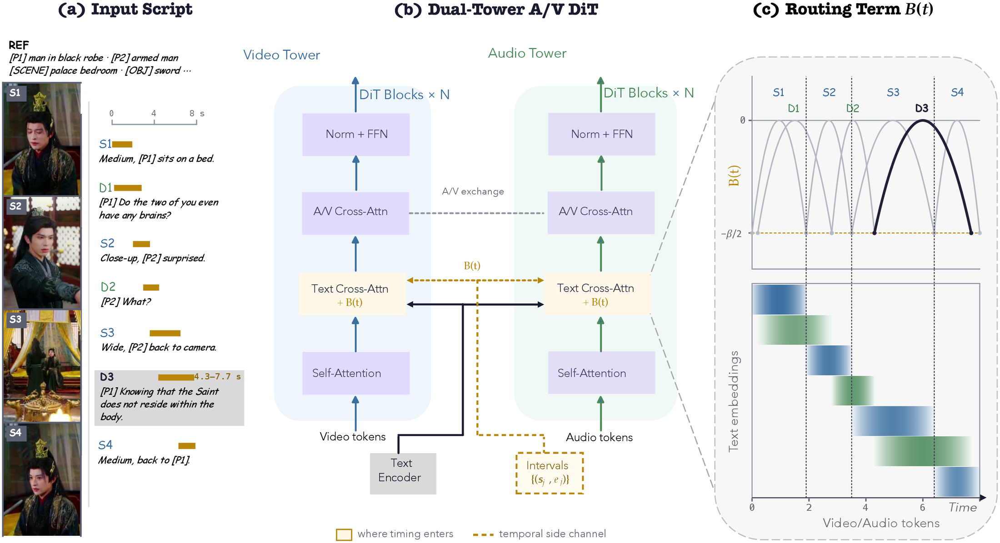
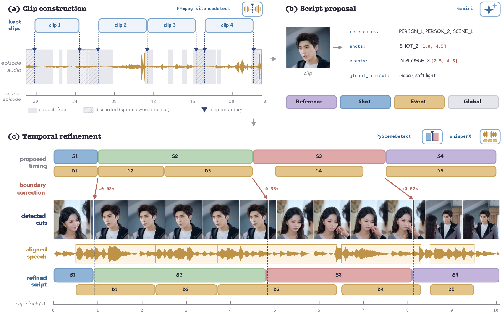

Video overview
Generated examples
the shot or line written in the script
the interval under the playhead
current position, synchronised with the video
Abstract
Audio-video generation is shifting from prompt following to script execution, where success depends on placing the requested content at the requested time. A director-style script schedules shots and spoken lines on one clock, so a plausible clip can still fail by cutting late or letting dialogue cross the wrong boundary. An interval defines the target, but the generator still needs a way to vary each script element's influence over video and audio queries. We formulate this missing operation as temporal routing. Temporal Context Routing (TCR) aligns script-specified shot and dialogue timing with the shared video-audio timeline. Timing bypasses the text encoder and enters cross-attention logits as a routing score, separating what to generate from when it should appear. Built on LTX-2.3 22B, TCR reduces shot-boundary error from 1.11 s to 0.042 s—about one frame at 24 fps—and raises dialogue timing accuracy from 28.3% to 84.1%.
Method

Time never enters the text encoder
Every time_range field is stripped from the script before tokenization and kept
in an index-aligned timing map. Shot, Event, Reference and Global records are matched back to
tokenizer positions, so each content token inherits the interval of the record it belongs to.
Tokens the script never placed — padding, special tokens, register slots — take a
sentinel interval and receive no routing term at all.
One term added to the attention logits
For a token with interval centre c and radius r, and a latent query at wall-clock time t, we add B = −β(t−c)2 / 2r2 to the pre-softmax text cross-attention logit. Because the terms combine additively, the unnormalized attention weight factorizes: semantic evidence selects what fits, the routing term decides when it matters. TCR has no learned parameters, and β is fixed at 5 everywhere.
Normalized by duration, not by a fixed width
Dividing by each record's own radius makes the profile relative to its duration, so a 0.8-second reaction and a 4-second establishing shot are treated alike rather than gated uniformly. Adjacent intervals meet their shared boundary at the same value, making the handoff between them duration-independent.
Both towers read the same clock
The routing term reads only wall-clock seconds, so a single function compiled once from the script is evaluated at the query times of each branch. The two routing matrices differ in shape because the latent lattices differ; what is shared is the function and its clock. A dialogue token and the shot it crosses are therefore routed against the same timeline.
Construction of data

-
Cut on sound, not on picture
Source episodes are split where the speech band goes silent, under an asymmetric rule: a clip must begin and end inside a speech-free region, while visual cuts inside it are deliberately kept. The resulting units are multi-shot clips in which dialogue routinely continues across a shot change and a line is often spoken by someone momentarily off screen — exactly the structure that fixed-length windows or per-shot clipping would destroy.
-
Propose structure with a captioner
Gemini proposes grounded Reference, Shot, Event and Global records, using stable identifiers instead of repeated appearance descriptions and keeping dialogue in its original spoken language. Fields that must not reach the model, most importantly transcribed burned-in subtitles, are removed at this stage.
-
Replace guessed times with measured ones
A record is retained only when its shot count agrees with a separately run content-based detector; a disagreement discards the clip rather than forcing an alignment. On agreement the detector's cut times replace the provisional boundaries, and WhisperX supplies word-level timestamps from the audio alone to re-time every line. The captioner supplies semantic structure; the detectors supply the clock.
Comparison with open-source generators
| System | Video quality | Temporal accuracy | Speech & A/V sync | ||||||
|---|---|---|---|---|---|---|---|---|---|
| IQ ↑ | AES ↑ | Shot B-MAE (s) ↓ | Shot IoU ↑ | Count Acc. (%) ↑ | Acc@0.5s (%) ↑ | WER (%) ↓ | Sync-C ↑ | Off. Acc (%) ↑ | |
| Wan2.2 video only | 0.6820 | 0.5150 | 2.31 | 0.422 | 9.0 | 0.0 | n/a | n/a | n/a |
| OVI | 0.6640 | 0.5602 | 1.84 | 0.457 | 17.0 | 8.6 | 56.9 | 2.37 | 17.2 |
| JoyAI-Echo | 0.6680 | 0.5167 | 1.81 | 0.464 | 15.5 | 23.2 | 11.9 | 2.71 | 7.3 |
| LTX-2.3 our base | 0.6819 | 0.5354 | 1.11 | 0.532 | 36.0 | 0.0 | n/a | 2.55 | 31.2 |
| TCR ours | 0.7032 | 0.5477 | 0.042 | 0.957 | 93.0 | 84.1 | 8.48 | 2.78 | 30.5 |
Bold is best, underline second best. Wan2.2 emits no audio, and LTX-2.3 produces no intelligible speech, so their speech columns are not applicable. Adding TCR to the same base lowers shot Boundary MAE from 1.11 s to 0.042 s, about one frame at 24 fps.
Citation
@inproceedings{liu2027missingtemporallink,
title = {The Missing Temporal Link: Temporal Context Routing
for Script-Driven Audio-Video Generation},
author = {Liu, Yichen and Zhang, Quanwei and Wang, Haozhe and
Zhou, Donghao and Li, Xiaojie and Shi, Yang and Liu, Jiaming and
Huang, Ruihua and Zou, Yingtian and Zhou, Daquan},
booktitle = {Under review},
year = {2027}
}